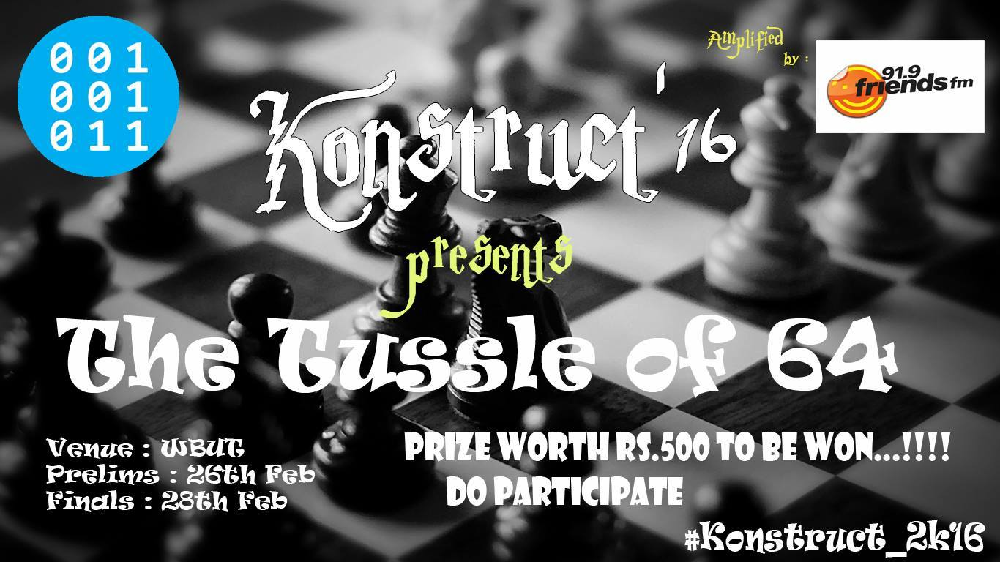
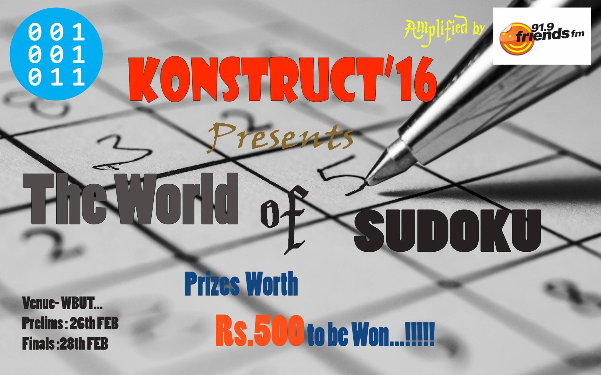
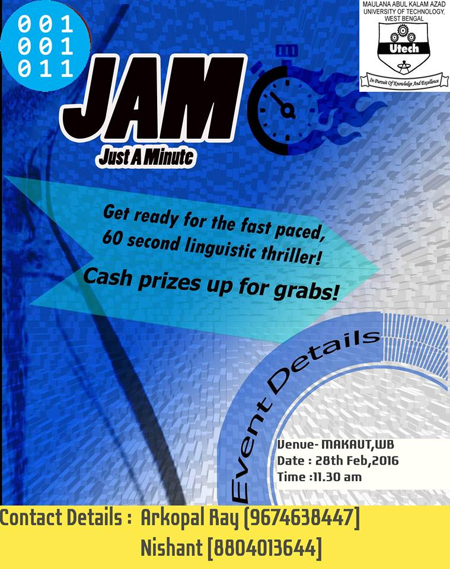
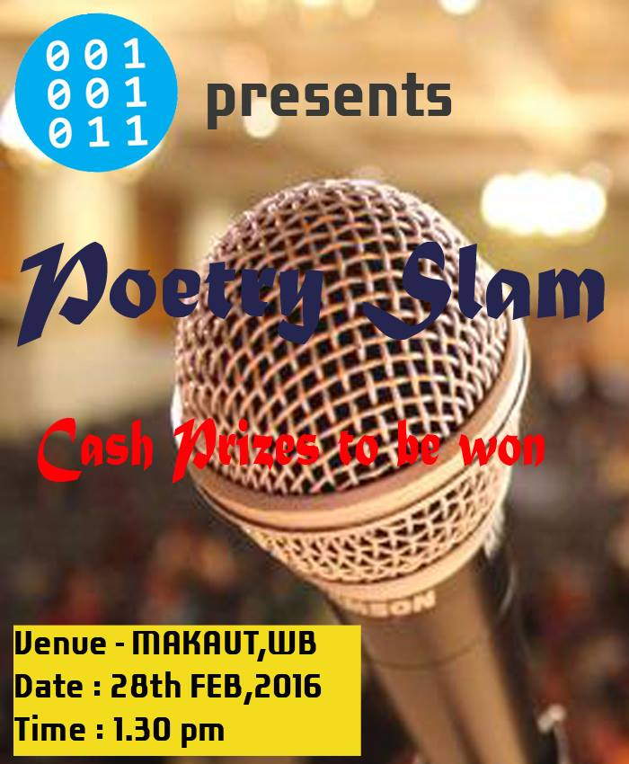
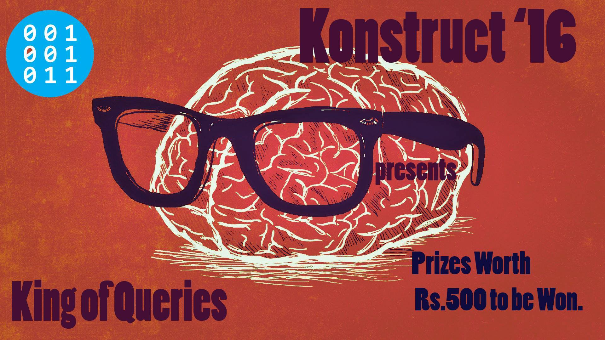

Welcome To 

Kolkata's First Open Source Fest is Back
Presented By West Bengal University of Technology

Kolkata's First Open Source Fest is Back
Presented By West Bengal University of Technology
For All Events and Timings, click here




